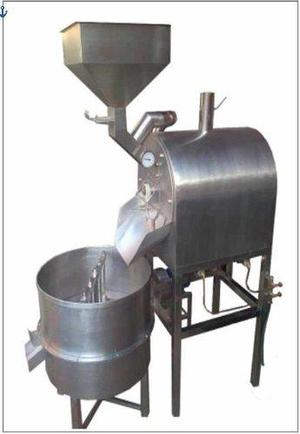

Tostadora de cacao

Es un equipo de tostado de granos de cacao que actúa controlando el calor para obtener perfiles de tostados personalizados, según el tipo de cacao y el resultado que desea obtener. El tipo de calefacción puede ser a gas o eléctrico.